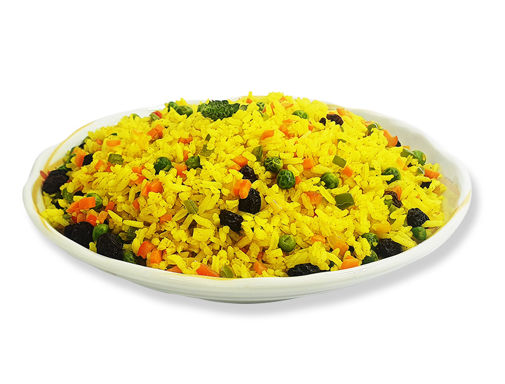

Arroz À Grega

Description
Despite being called "Greek Rice, arroz à grega was not invented in Greece and it's not present in the country either. Since Brazilians tend to eat rice with almost every meal, it's commom to come up with new ideas on how to prepare the rice. Arroz à grega is a great option of side dish during Christmas and is eaten in many households.
Ingredients
- 3 cups of rice
- 6 cups of water
- 1 cup of raisings
- 5 table spoons of green peas
- 1 table spoon of butter
- Vegetable oil
- Chopped green bell pepper, onions and green onions to taste
- Salt to taste
Steps
- Put the water with salt and a bit of vegetable oil in a pan. Bring it to boil.
- Add rice to the pan when the water is boiling.
- Let it cook until there's no more water in the pan.
- In another pan, put the butter and braise raisings and peas together.
- In a bowl mix everything together and it's ready to be served.